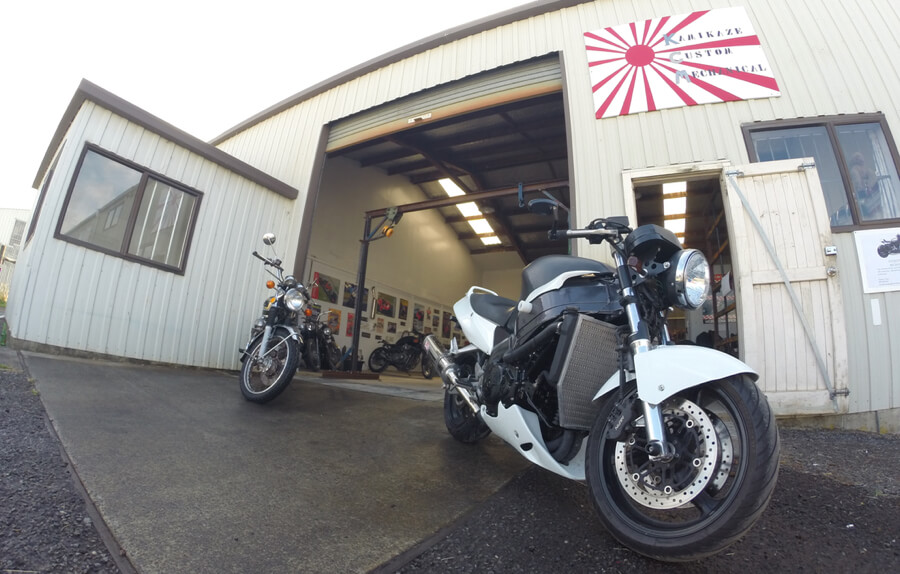

Kamakazi Custom Mechanical
At Kamikaze Custom Mechanical (KCM) we provide parts, service and repairs for Japanese motorcycles, quad bikes and machinery. We have the fabrication equipment and experience to design and construct custom mechanical solutions tailored to your needs.
Motor Bikes
We love bikes. Café racers, modified street, flat trackers, dirt, if it has two wheels then it is all good by us.
While expert in the service and repair of Bikes, KCM also specialises in custom solutions and modifications for your Japanese bike. Unique part fabrication to give your bike is own individual sense of style.
In the near future we hope to provide tyre supply and fitment for a wide range of bikes. In the meantime KCM offers a tyre changing service for all bikes after sourcing the right tyres for you.
Quads
In the world of four wheels, we offer expert servicing and repair of Quad bikes. As your work horse, we know how important it is to keep your quad in working order.
Cars and other Machinery
With years of experience across the mechanical and engineering fields and a trade qualification as an automotive mechanic, we are confident in our ability to service and repair all Japanese machinery including:
- Cars – from Toyota to Nissan, we have competitive rates in the service and repair of all Japanese cars
- Tractors & lawn care machinery.
- Other farm machinery; bring it in and we’ll take a look!
Custom Mechanical Solutions
Where a solution doesn’t already exist, KCM specialises in custom based, innovative options. With the ability to creatively approach any challenge. If you require light engineering from general welding, trailer builds, to one off prototypes, then have a chat and see what we can offer.
Some recent custom mechanical solutions designed and fabricated by Tony include:
 Slow bend Rail Test Rig.
Slow bend Rail Test Rig.
Designed for purpose, this test rig applies force to a welded section of railway iron until failure is reached. Forces equating to in excess of 300 ton were required to obtain a typical failure, however test rig design capacity of 20mega Newton (2000 ton).
Cyclic Fatigue of fifth wheel coupling
 This rig was designed and built to comply heavy duty towing products utilising
Australian standards. One aspect of this compliance was a cyclic test simulating
forces of extreme service towing.
This rig was designed and built to comply heavy duty towing products utilising
Australian standards. One aspect of this compliance was a cyclic test simulating
forces of extreme service towing.